Inicio
Un plato del mundo para empezar.
La pantalla de inicio muestra el plato del día, con foto y lugar de origen. Busca por nombre o descripción, o recorre las recetas destacadas.
Recetas del Mundo
Recetas tradicionales de todo el mundo, cada una con foto, ingredientes, paso a paso, alérgenos y la historia del plato. Todo en el móvil, sin internet y sin cuenta.
Gratis para descargar · plan Completo, mensual o anual, o «Para siempre» en compra única
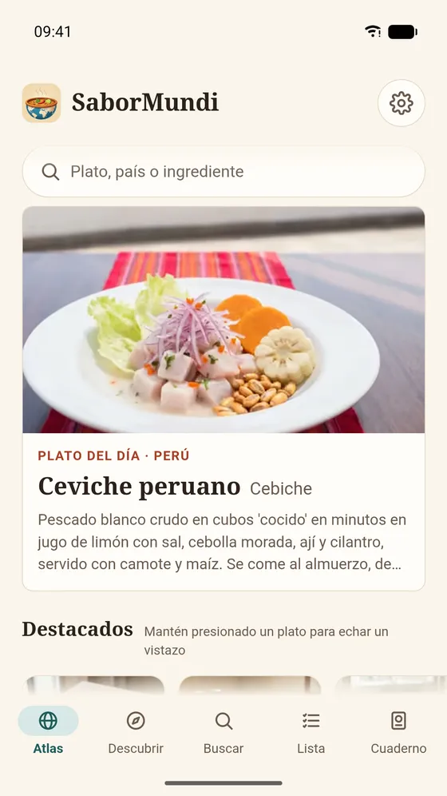
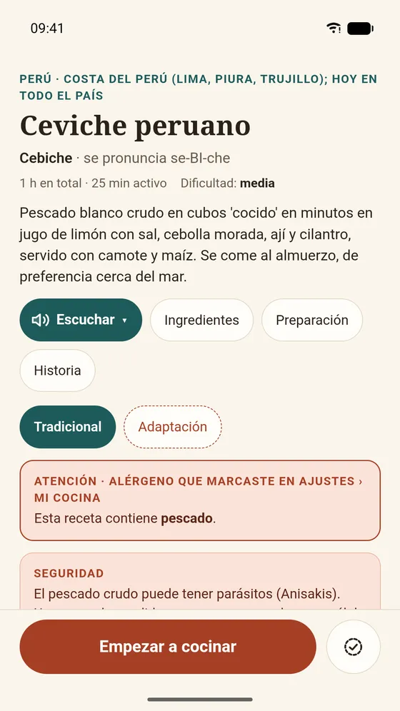
Hecho para quien disfruta cocinando y quiere conocer el plato antes de ponerse manos a la obra.
Inicio
La pantalla de inicio muestra el plato del día, con foto y lugar de origen. Busca por nombre o descripción, o recorre las recetas destacadas.
La receta
Cada receta tiene foto, ingredientes, preparación, alérgenos y la historia del plato. Ajusta las porciones y elige medidas métricas o de EE. UU.
Modo cocina
En el modo cocina, la pantalla muestra un paso cada vez, con letra grande, y los temporizadores quedan a la vista mientras cocinas.
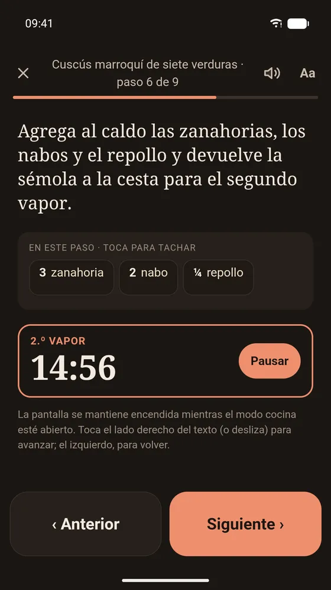
Narración
La voz de tu propio dispositivo lee la receta en voz alta y tú sigues con las manos libres.
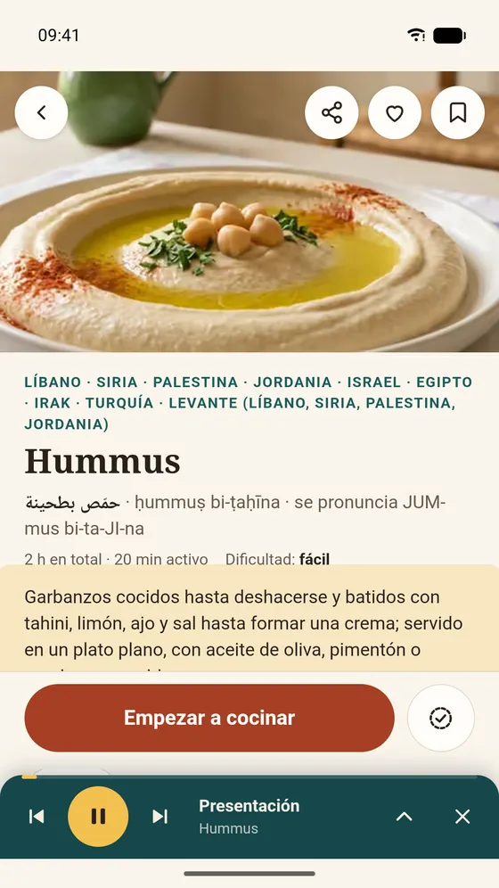
Vista previa
Algunas recetas se abren completas gratis. Las demás muestran una vista previa: foto, historia y alérgenos.
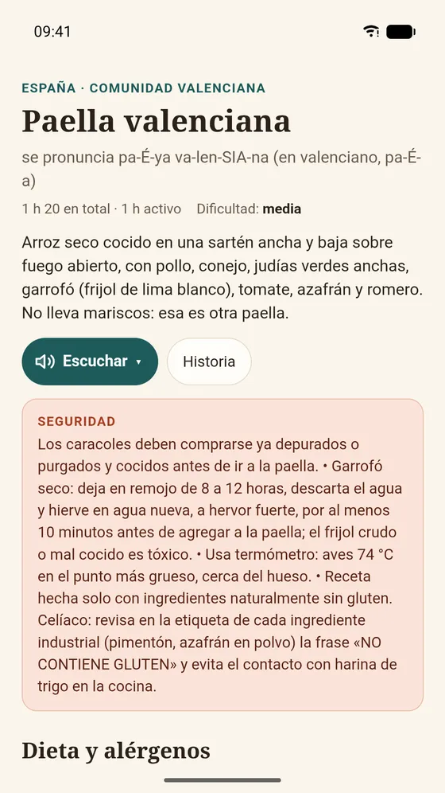
Tengo en casa
Dile a SaborMundi lo que tienes en la cocina y te muestra las recetas que puedes hacer y lo que falta. Filtra por dieta: vegetariana, vegana, sin gluten, sin lácteos.
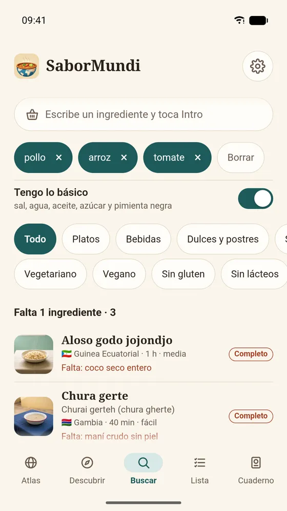
Lista de compras
Reúne los ingredientes de las recetas elegidas en una lista de compras ordenada por sección y añade lo que te haga falta.
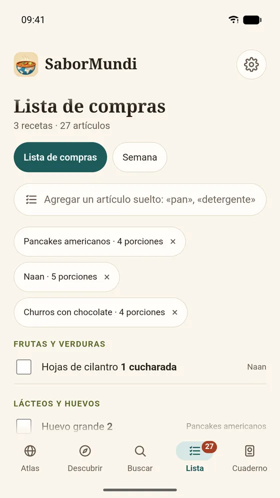
Mi cocina
Marca los alérgenos de quienes viven contigo. La receta que contenga alguno muestra un aviso arriba y resalta el ingrediente.
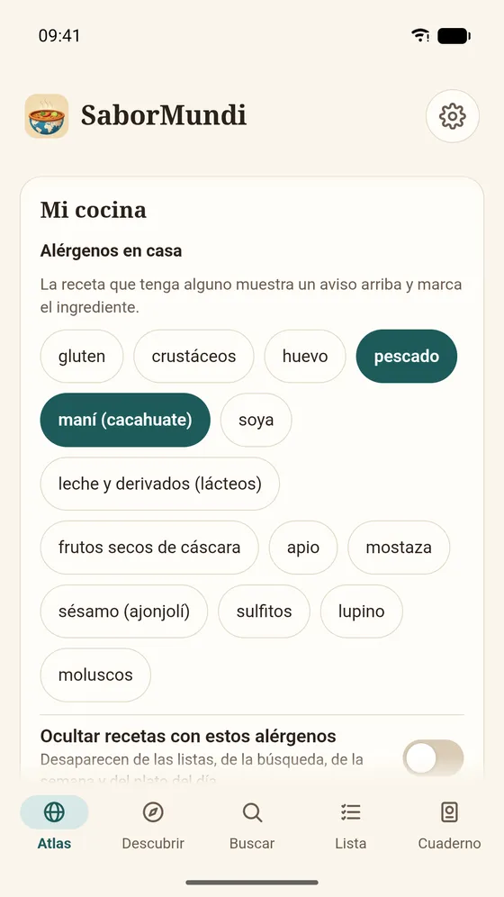
Descargarla es gratis, y algunas recetas se abren completas para que pruebes la app. El plan Completo, mensual o anual, o la compra única «Para siempre» abre todas las recetas.
Las pantallas de la app.
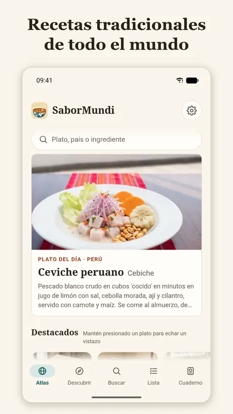
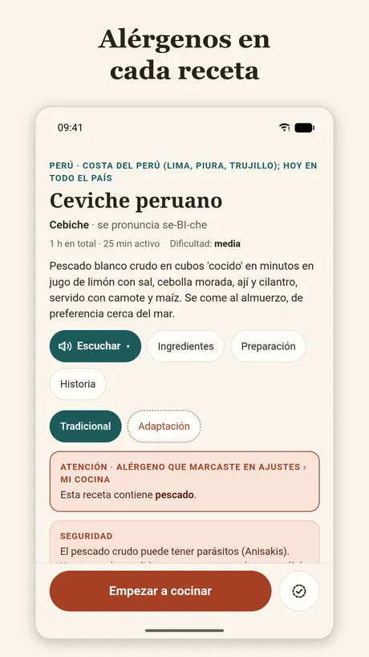
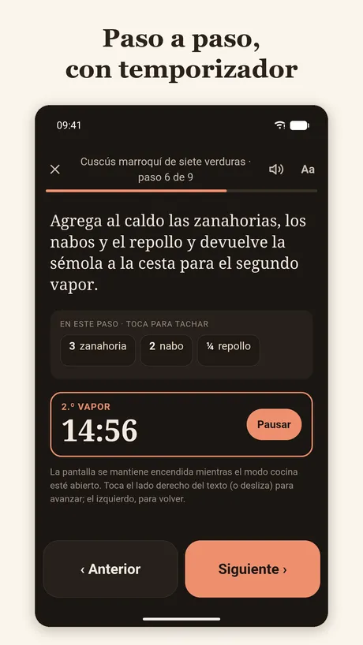
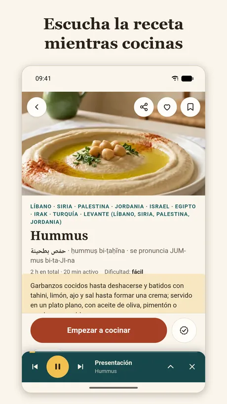
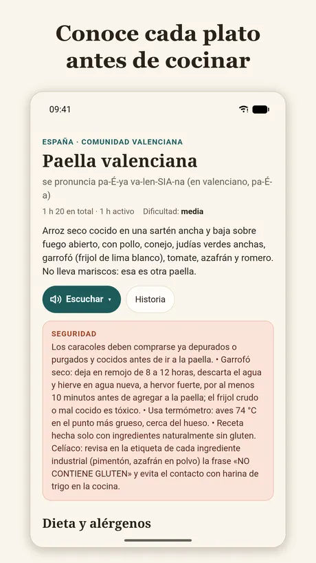
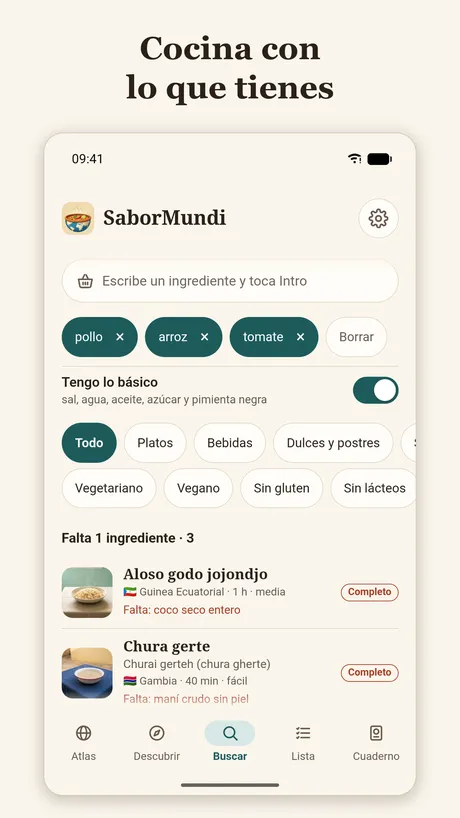
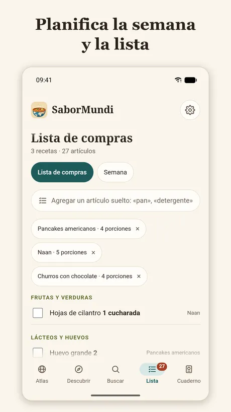
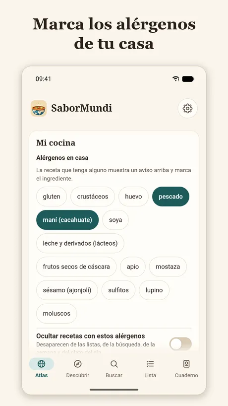
Sin cuenta, sin anuncios y sin recopilación de datos. SaborMundi no hace conexiones propias a internet: lo que marcas se queda en tu dispositivo y solo sale cuando compartes una receta o la lista, o exportas la copia de seguridad.
Descargarla es gratis, y algunas recetas se abren completas sin coste. Las demás muestran una vista previa con foto, historia y alérgenos. El plan Completo, mensual o anual, o la compra única «Para siempre» las abre todas. No hay anuncios.
Sí. Las recetas, la búsqueda, el modo cocina y la lista de compras funcionan con el móvil sin conexión. Solo la compra pasa por la tienda.
No. No hay registro. Para llevar tus datos a otro móvil, exporta la copia de seguridad.
Sí. Elige medidas métricas o de EE. UU. y ajusta las porciones de cada receta.
Las recetas indican los alérgenos principales y avisos de seguridad, pero las marcas y los ingredientes varían. Revisa siempre la etiqueta de cada producto y sigue la orientación de tu médico o nutricionista.